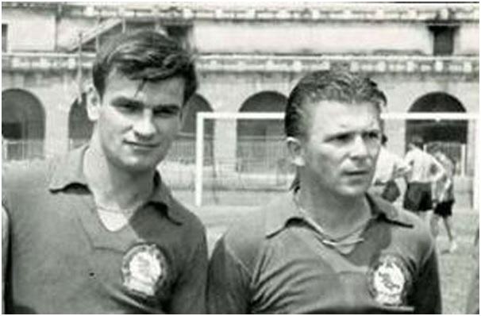
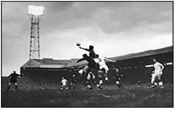

Chương 13

rong tám cầu thủ United thiệt mạng, chỉ Geoff Bent dự bị, bảy người kia đều giữ vai trò quan trọng. Byrne, Edwards và Taylor còn là trụ cột ĐTQG Anh chuẩn bị tham dự World Cup tại Thụy Điển. Trong số người còn sống, ai cũng bị thương, phải tĩnh dưỡng một thời gian dài. Đủ sức ra sân thi đấu ngay chỉ có hai thành viên: Harry Gregg và Bill Foulkes. Tuy vậy, chủ tịch Harold Hardman quyết tâm không bỏ giải. “Dù thua nặng nề, chúng ta vẫn phải thi đấu tới hết mùa”,ông chỉ thị cho Murphy, “CLB có nghĩa vụ đối với người hâm mộ, không thể nào bỏ cuộc được. Giờ đây mọi việc trông vào anh đấy, Jimmy. Hãy nhớ rằng đội bóng lớn hơn tất cả: hơn anh, hơn tôi, hơn Busby. Bằng mọi giá phải tiếp tục cuộc chơi.”
Dĩ nhiên, CLB phải xin hoãn các trận đấu quá cận ngày. Thay vì gặp Wolves, trận tiếp theo của United nay được ấn định là trận vòng 5 Cúp FA gặp Sheffield Wednesday, sẽ diễn ra vào ngày 19 tháng 2, 1958. Vậy là Jimmy Murphy chỉ có hơn 10 ngày để củng cố lực lượng, xây dựng đội hình mới từ đống tro tàn. Trong hơn 10 ngày đó, trăm dâu đổ đầu tằm, ông phải tất tả chạy ngược chạy xuôi, làm việc mỗi ngày 20 tiếng, không đủ thời gian ngủ nghỉ. “Murphy là người khổng lồ nâng đội bóng trên vai”, Martin Edwards nhận định, “Không có ông ấy, con thuyền United hẳn chìm mất rồi”.
United đã sẵn đội hình trẻ, song đa số còn quá thiếu kinh nghiệm, nên song song với việc đôn cầu thủ trẻ lên đội một, cần mua thêm một số cựu binh gạo cội về “chữa cháy”. Lại cần bổ sung cả BHL, bởi Bert Whalley và Tom Curry đều đã qua đời. Murphy ngỏ ý với Luton, mời Jack Crompton về làm trợ huấn. Crompton chính là cựu thủ môn của United, từng cùng đội giành Cúp FA năm 1948 và chức VĐQG năm 1952. Đang hạnh phúc trong vai trò trợ huấn ở Luton, nếu bình thường, Crompton sẽ từ chối lời mời về Old Trafford, nhưng giữa lúc cố nhân rơi vào cảnh hiểm nghèo, ông chẳng thể từ nan. Hai cựu cầu thủ khác của United cũng lên tiếng muốn giúp đỡ đội bóng cũ. Charlie Mitten, HLV Mansfield, và Allenby Chilton, HLV Grimsby, tuyên bố sẵn lòng cho Murphy mượn bất kỳ cầu thủ nào từ đội mình.
Thế nhưng, theo luật định, một cầu thủ không thể khoác áo hai CLB trong cùng một mùa Cúp FA. Vậy nên, trước khi mua/mượn thêm người, United phải làm đơn xin phép FA. Thông cảm trước tình cảnh khó khăn của Man đỏ, Liên Đoàn phá lệ, cho phép các tân binh United được thoải mái đá cúp.
Murphy đang phân vân chưa biết nên bổ sung đội hình ra sao, bỗng bộ ba siêu sao Ferenc Puskas, Sandor Kockis, và Zoltan Czibor cùng đánh tiếng muốn được về Old Trafford. Cả ba là thành viên đội tuyển vàng Hungary, nay vì lý do chính trị đều bỏ nước sống lưu vong, đang đi tìm một CLB thích hợp. Để độc giả ngày nay dễ hình dung về tầm vóc vĩ đại của ba cầu thủ này, chúng tôi đưa ra một tỷ dụ: United ngày đó nếu có được họ, sẽ tương đương với việc United của thập niên 1990 cùng lúc sở hữu Ronaldo Luiz Nazario de Lima, Gabriel Batistuta và Zinedine Zidane!
Vậy mà cơ hội ngàn năm một thuở đã bị bỏ qua. Tuy rất muốn, Murphy không thể ký hợp đồng với các siêu sao Hungary, vì lúc ấy FA thắt rất chặt lệnh cấm cầu thủ nước ngoài, và không cho bất kỳ CLB nào trả lương cầu thủ quá 20 bảng/tuần. Cuối cùng, Puskas ký hợp đồng với Real Madrid, nhận mỗi tuần số tiền tương đương…800 bảng. Kocsis và Czibor cùng về Barcelona.

Sandor Kocsis (trái), vua phá lưới World Cup 1954, cùng “Thiếu tá thần tốc” Ferenc Puskas. (Ảnh: Culturaredonda.com.ar)
United không phải không tiền, nhưng mua sắm vào tháng hai thì chẳng nhiều lựa chọn. Dẫu đội bóng nào cũng tỏ ra thông cảm, sẵn sàng bán rẻ, cho mượn, thậm chí tặng không cầu thủ cho Man đỏ, những cầu thủ đó toàn là không đủ năng lực, hoặc đã hết thời. Điều ấy cũng dễ hiểu, dù cho thông cảm đến mấy, ai dễ gì lại đem ngôi sao ra cho? Thay vì Puskas, Murphy sau rốt đành mua Ernie Taylor, tiền đạo “hàng thải” 33 tuổi của Blackpool. Ngoài Taylor, ông không kiếm thêm được ai, đành đôn lên hàng loạt cầu thủ trẻ. Vì đó, đến lượt đội dự bị thiếu hụt lực lượng, buộc United phải đem về một mớ cầu thủ nghiệp dư trám vào chỗ trống. Vậy là cùng lúc, cả đội một lẫn đội trẻ United đều suy yếu trầm trọng. Đội một nay toàn măng non chưa kinh qua trận mạc, còn đội trẻ được bổ sung toàn hàng kém chất lượng[1].
Một tiếng trước trận gặp Wednesday, Murphy hoàn tất hợp đồng mua tân binh thứ hai: tiền vệ Stan Crowther từ Aston Villa, giá 18000 bảng. Cũng như Albert Pape 33 năm trước, Crowther vừa gặp mặt, bắt tay các đồng đội, liền phải thay đồ ra sân ngay[2]. Đội hình United ra quân ở vòng 5 Cúp FA như sau: Gregg (thủ môn), Foulkes (đội trưởng), Goodwin, Cope, Crowther, Webster, Taylor, Dawson, Pearson và Brennan.
Sau khi mua Crowther, Murphy mới quyết định dùng đội hình trên, nên trong tờ rơi giới thiệu danh sách hai đội trước trận đấu, danh sách United bỏ trống, không thấy một cái tên nào. Đội hình chắp vá, què quặt, không ai nghĩ các học trò của Murphy giành nổi chiến thắng. Chẳng ngờ ngày hôm ấy, CLB biến đau thương thành quyết tâm cao độ, ai nấy đều một mình nỗ lực bằng hai, hết lòng chiến đấu vì những đồng đội đã qua đời. Lần đầu chơi cho đội một, lại phải đá tiền đạo cánh thay vì vị trí hậu vệ sở trường, cầu thủ 21 tuổi Shay Brennan gây ấn tượng cực mạnh. Khi United được hưởngquả phạt góc đầu tiên, bóng từ chân Brennan vẽ một đường cong kỳ lạ, bay qua tầm với của thủ thành Wednesday, chui tọt vô cầu môn. Sau này, Brennan nhớ lại, lúc đấy anh cảm giác như cái bóng vô hình của Tommy Taylor đã nhảy lên, đội đầu vào lưới. Cũng chính Brennan nhân đôi cách biệt, trước khi Dawson ghi bàn ấn định 3-0. Đây là cú đúp duy nhất trong sự nghiệp Brennan. Trong suốt 357 lần tiếp theo khoác áo United, đến tận 1970, anh chỉ ghi thêm vỏn vẹn…bốn bàn.
Người ta có thể đá bằng ý chí, chơi như lên đồng trong vài trận, song đòi hỏi điều ấy trong thời gian dài thì thật bất khả. Tuy thắng oanh liệt Wednesday, United càng về cuối đá càng đuối. Sau thảm họa Munich, đội thi đấu 14 trận tại giải VĐQG, thắng duy nhất một, rơi từ tốp dẫn đầu xuống tận hạng chín. Dần dần, các trụ cột như Charlton và Viollet lành thương tích và trở lại sân, nhưng họ vẫn mang trong mình những vết thương lòng, những sang chấn tâm lý trầm trọng. Phong độ họ do đó bị ảnh hưởng, không thể giúp cải thiện phong độ đội bóng.
Ở Cúp FA, tình hình khá khẩm hơn. United lần lượt đả bại West Brom và Fulham, giành quyền vào chung kết với Bolton. Trước trận đấu, Matt Busby chống nạng đến sân tập The Cliff, hội ngộ cùng các học trò sau thời gian dài xa cách. Được Murphy và Crompton đỡ hai bên, ông đứng trước cầu thủ, định nói một đôi câu, nhưng vừa mở lời đã bật khóc, buộc phải quay đi. Trông ông gầy và ốm yếu, như già đi hàng chục tuổi.
Trở lại sân cỏ là nỗ lực rất lớn của Busby. Như đã kể, từng có lúc ông không muốn sống, chỉ ngày đêm nguyện cầu được chết. Qua giai đoạn u ám, tinh thần khá lên, ông vẫn nhất quyết đòi từ giã nghề huấn luyện. Mỗi khi nghĩ đến việc về Old Trafford, thấy lại cảnh cũ mà không còn người xưa, lòng ông quặn đau từng cơn. May nhờ bà Jean ngày ngày ủi an, thuyết phục, ông mới dần đổi ý. “Anh về hưu ư?”, bà nói, “Liệu đó có phải điều các học trò đã khuất của anh mong muốn? Không, nếu anh nghĩ đến họ, thì phải vì họ mà tiếp tục chứ.”
Chung kết Cúp FA ngày 3 tháng 5, Busby được mời dẫn đầu đoàn cầu thủ United bước ra sân. Ông nhã nhặn từ chối: Jimmy Murphy vẫn đang là quyền HLV trưởng, anh ấy mới là người đưa đội tới Wembley, tôi có công gì mà tranh chỗ? Ông cũng khước từ không lên ngồi nơi lô ghế hoàng gia, mà chọn một vị trí ngay đằng sau Murphy. Trên sân cỏ, diễn tiến không thuận lợi cho đội đỏ. Mới phút thứ ba, Nat Lofthouse đã mở tỷ số cho Bolton. Phút 50, Harry Gregg lao ra bắt bóng, va chạm mạnh với Lofthouse, khiến cả thủ môn lẫn banh bay vào trong khung thành. Theo tiêu chuẩn ngày nay, Lofthouse đã phạm lỗi, song vào thời đó, bàn thắng hoàn toàn hợp lệ.
Dù thua 0-2, United được tung hô như nhà vô địch. Về đến Manchester, đội được cả trăm ngàn CĐV chào đón, hoan nghênh. Nhìn cảnh ấy, Matt Busby càng thấm thía lời vợ mình là đúng: Nếu thương nhớ học trò, thì càng phải tiếp tục cuộc chơi. Ông tự đặt mục tiêu phải đưa bằng được CLB trở lại đỉnh cao. Hơn thế nữa, vì những học trò đã khuất của ông qua đời trên con đường chinh phục Cúp C1, bằng mọi giá, ông quyết tâm giành Cúp này ít nhất một lần, để dâng lên hương hồn họ.
Thế nhưng đó là chuyện tương lai, còn ngay hiện tại, United phải dừng bước tại bán kết trước gã khổng lồ nước Ý AC Milan. Đội hình Milan lấp lánh đầy sao, với những Giovanni Trapattoni, Lorenzo Buffon[3], Cesare Maldini[4], và đặc biệt là bộ đôi Nils Liedholm, nhạc trưởng Thụy Điển giành ngôi á quân World Cup 1958 - Juan Schiaffino, thủ quân Uruguay vô địch thế giới 1950. Đối đầu cùng địch thủ quá mạnh, đội quân chắp vá của Jimmy Murphy không thua mới lạ. Họ cố gắng hết sức, thắng được 2-1 tại Old Trafford, chỉ để phơi áo 0-4 trên đất Italy.
Thất bại mặc lòng, 1958 vẫn là năm Jimmy Murphy đạt tới đỉnh cao. Dẫn dắt một đội bóng vừa qua thảm họa, mất gần hết đội hình, đứng thứ 9 ở giải VĐQG, vào chung kết Cúp FA, và thắng được một trận trước AC Milan hùng mạnh, như thế đã là phi thường. Thêm vào đó, trong lần đầu dự World Cup với xứ Wales, Murphy còn đưa đội vào đến tứ kết. Không lạ khi Juventus và Arsenal cùng chèo kéo Murphy về làm HLV trưởng. Từ Nam Mỹ, LĐBĐ Brazil cũng đánh tiếng mời ông làm HLV ĐTQG, sẵn sàng trả lương 30000 bảng/năm. Không mảy may suy nghĩ, Murphy từ chối tất. Ông chẳng bao giờ nghĩ đến việc rời Old Trafford đi bất cứ đâu.

Thủ thành Harry Gregg bật cao phá bóng trong trận Manchester United thắng AC Milan 2-1, bán kết Cúp C1 mùa 1957-1958 (Ảnh: Bbc.co.uk)
Chú thích:
[1] Vậy mà vẫn không đủ nhân sự. Nhiều trận đội trẻ thiếu người, Jimmy Murphy phải nhờ con trai mình vào đá giúp.
[2] Crowther và Taylor đều chỉ đóng vai trò chữa cháy. Mùa 1958-1959, khi United ổn định lại lực lượng, cả hai nhanh chóng bị đẩy đi.
[3] Ông trẻ của Gianluigi Buffon.
[4] Cha của Paolo Maldini.